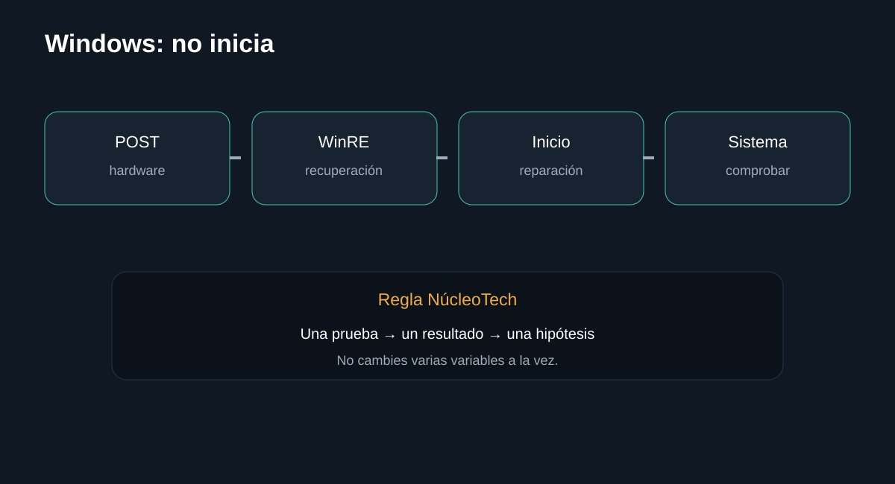

Introducción

Separa detección en BIOS, conexión fÃsica, salud del almacenamiento y problemas de arranque de Windows. La guÃa busca que puedas separar causas antes de sustituir componentes.
Antes de empezar: seguridad
Desconecta el equipo cuando corresponda y no realices mediciones peligrosas sin formación e instrumental. En baterÃas, fuentes y placas, detén el procedimiento si detectas daño fÃsico, lÃquido, olor extraño o calor anormal.
- Documenta el estado inicial.
- Haz una sola modificación cada vez.
- Conserva tornillos, cables y configuración original.
Herramientas
1. Comprobar BIOS/UEFI
Primero determina si el firmware detecta el almacenamiento.
Qué hacer
- Entra al firmware.
- Comprueba si aparece el SSD.
- Anota modelo y capacidad.
Registra el resultado antes de continuar.
InterpretaciónPrimero determina si el firmware detecta el almacenamiento.
2. Revisar conexión
Un problema de cable o montaje puede parecer un SSD muerto.
Qué hacer
- En SATA, revisa datos y alimentación.
- En M.2, verifica montaje y compatibilidad del slot.
- Prueba otro puerto/cable si procede.
Registra el resultado antes de continuar.
InterpretaciónUn problema de cable o montaje puede parecer un SSD muerto.
3. Separar hardware de Windows
Si BIOS detecta el disco, el problema puede ser de arranque o sistema.

Qué hacer
- Usa un medio de recuperación.
- No formatees antes de comprobar si necesitas conservar datos.
- Prueba Reparación de inicio cuando corresponda.
Registra el resultado antes de continuar.
InterpretaciónSi BIOS detecta el disco, el problema puede ser de arranque o sistema.
4. Evaluar salud
Si el disco funciona, comprueba SMART/diagnóstico del fabricante.
Qué hacer
- Haz copia de datos si el disco aún responde.
- Revisa errores y salud.
- Si hay indicios de fallo fÃsico, prioriza recuperación de datos.
Registra el resultado antes de continuar.
InterpretaciónSi el disco funciona, comprueba SMART/diagnóstico del fabricante.
Diagnóstico final
Fuentes y notas
Microsoft documenta Reparación de inicio en WinRE para problemas de arranque. No confundas una falla de Windows con un SSD que ni siquiera aparece en firmware.